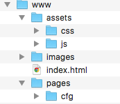

THIS IS WEEK 1 LAB 1
MY FIRST HTML PAGE
Creating a Web folder structure
In this task, we would create a folders to store different sections of our web content. For the purposes of this course, the first rule of web design is ORGANIZATION. Be organized. A web directory is simply a folder where you store all your web files. Web files include contents and assets for your website. Observe the picture below and think of how you would store your web files so that they have a meaningful arrangement.
The 'index.html' file: This file is compulsory. There must be an existing file names index.html in your web folder. This folder must be accesible without any further navigation into sub-directories. It Must be in the main directory.
The remaining folder is based on your preference. In my web directory above, i have stored all my images in one folder all my assets in another folder which has sub folders 'css' and 'js' and every other page (besides index.html) in another folder.
- Navigate to your desktop, create a folder called ' CFG'.
- Within CFG create another folder called 'www'
- Open sublime text create a new file; name it index.html and save it in the 'www' folder.
- Now take a look at the picture above and observe other structures of web directories here
- Decide on a structure and create subsequent folders to represent that folder.
- In sublime text, create another new file 'main.css' and save it in your css folder (Wherever you have created and kept this).
******************END OF SUB TASK********************
Creating the web page
In this sub task we would create our html page and all sections of the page we need. Every HTML body content needs a header, navigation bar: telling people where to find things and a structure to the division of content.
- In your index.html file in sublime, create the basic structure of html pages.
- Within your body tags, crate four divs. Within the opening tag of each div give the divs class attibutes of div 1: 'header', div 2: 'navbar', div 3: 'jumbotron' and div 4 : 'footer'. do this like "<div class = 'header'></div>
- Observe the picture below. This is what your page should look like.
******************END OF SUB TASK********************
Creating inline styles
There are three ways style can be added to html content. Inline styling, internal styling and external styling with stylesheets.
- The style attribute for inline styling
- The style tag for Internal styling
- Writing and linkingexternal stylesheetsas .css files.
The header div
For this task we would create out header div. We would be working strictly within the div classed 'header'
- Within the opening tags of the header div, define a style attribute with property:value pairs: width:100%; height:45em; background-image:url("IMAGE ADDRESS ON INTERNET");.
- Go on google images and find a picture that comes across as 'About me' or represents these words or feeling. Copy the IMAGE ADDRESS NOT LINK ADDRESS of this file and paste it within the url quotes in your 'Background-image' property value.
- Giving an element a widthof 100% is telling it to take the full width of its immediate parent. i.e the tag directly wrapping it.
- You might notice the image might be repeating: If you do not notice this, it is completely fine. If you do notice this leave it for now, we will cover this in CSS styling.
- Add a h1 heading 'ABOUT ME'
- Add a h3 heading 'YOUR PREFERED CATCH PHRASE'
- Using the text-align:center property:value pair move these headings to the center of the page.
******************END OF SUB TASK********************
The Navigation Div: 'navbar'
- Observe the navigation bar on the home page and course page. Navigation must be intuitive. It must be a logical grouping of site content.
- Think of all the things you want to add to your personal page and how you would logically group them.
- Create a list of at least four groups pf things. Think of each group as a new page on tour website.
- Using the 'ul' and 'li' tags create a navigation menu like here in this example. and put each of your prefered group within an 'li' tag. You should have at least four list items.
- Decide if you want a vertical or horizontal navigation bar.
- Create one of the navigation bars on this page
- PUT ALL YOUR STYLING INLINE. NOT IN A STYLESHEET.
The Jumbotron Div
A Jumbotron, sometimes referred to as Jumbovision, is a large-screen television using technology developed by Sony, typically used in sports stadiums and concert venues to show close up shots of the event. It is a bootstrap terminoly for 'Main area'. Something you want to be obvious to your readers. Here we would add our profile picture, and a little detail about ourselves.
- Give an inline style attribute of "width:100%; height:auto; background-color:'black'; " to your jumbotron div.
- Within your jumbotron we are going to create 3 circles for 3 pictures of yours. You can have 2 if you like.
- Within your jumbotron div, create another div classed "figures" within which you would create 3 figure tags with corresponding figcaption tags.
- Within the opening tag of the "figures" div, create an inline style attribute with the property:value pairs "width:100%; height:auto; display:block;"
- Within each figure tag create one image tag as seen in the example page.
- Within the opening tags of the figure tags, create an inline style attribute with the property:value pairs "width:250px; height:250px; border: 5px dotted OR dashed OR solid blue (pick 1); border-radius:50%;"
- Within the opening tags of the image tags, create an inline style attribute with the property:value pairs "width:100%; height:100%; border: 5px dotted OR dashed OR solid blue (pick 1); border-radius:50%;"
The Footer div
The <footer> tag defines a footer for a document or section.
A <footer> element should contain information about its containing element.
A <footer> element typically contains:
- authorship information
- copyright information
- contact information
- sitemap
- back to top links
- related documents
You can have several <footer> elements in one document.
- Within the opening tags of your footer div create inline style attribute with property:value pairs "width:100%; height:[give a desired height in px. do this and vary until the proprtions are appropriate.]
- Within the the footer div tags create a footer tag with inline style attribute of property:value pairs "width:100%; height:100%; display:block;"
- within the footer tag, create a table tag with just one table row. [Do not bother creating a table head, just one row] and 5 table data cells. i.e 1 tr tag and 5 td tags within. Refer to class notes.
- Give the table tag inline styling:"width:[GUESS WIDTH]; height:[GUESS HEIGHT]; display[GUESS DISPLAY];".
- We want our table borders to show, what attribute Attributecan we pass to the table elemnet?
- Move this table to the conter of the page. RESEARCH
******************END OF TASK********************